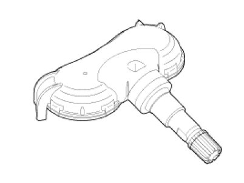

Tire Pressure Sensor: Description and Operation
Description

1. Mode
(1) Configuration State
A. All sensors should be in the Low Line (Base) state.
B. In Low Line (Base) configuration, sensor transmissions occur every 3 minutes 20 seconds (nominal) and pressure is measured every 20 seconds.
(2) Normal Fixed Base State
A. Sensor transmissions continue at the Low Line (Base) configuration defined rates until the state is either changed by LF command or by the sensor detecting a condition that requires a temporary change to another state.
B. The LF command to this state must contain the sensors ID.
(3) Storage Auto State :
A. This state is a Low current consumption state.
B. Sensors are in this state when they first arrive at the dealership (either on the vehicle or as replacement spares).
C. In this state, the sensor does not measure pressure / temperature / battery level.
D. The sensor will not transmit in this state unless requested to do so by the initiate command.
(4) Alert State :
A. The sensor automatically enters this state if the measured temperature exceeds 230 °F(110 °C) and over temperature shutdown is likely.
B. In this state, pressure is measured every 4 seconds and RF data transmitted every 4 seconds.
C. The state lasts for 1 minute if it is pressure triggered.
D. This state is also entered when a 3 psi change in pressure from the last RF transmission occurs.
NOTE:
Sensor mode is used to configure sensor between high line and low line system. TPM sensor for MD should be set to low line.